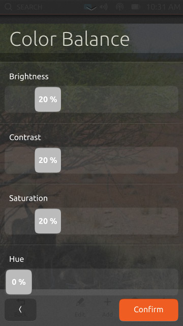
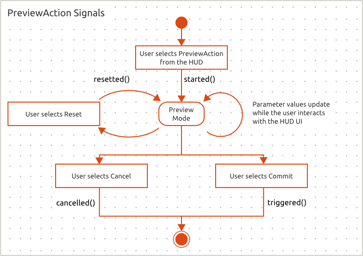

The preview action is an action that allows the application to generate a preview of the action before the action is applied. The preview is controlled by the HUD UI.
PreviewActions contain one or more parameters which form the preview parameters of the action.
The PreviewAction has additional extra requirements compared to other Actions:
- It can have multiple parameters whose values can be seen and changed over the bus
- The parameters' ordering can be specified by client code
- It adds new signals to control the preview mode: started, cancelled, resetted
The ordering of the parameters is specified by the order in which the actions are defined in the parameters list.
PreviewAction does not have a value of it's own. Instead the values of the parameters provide the information on which the preview is generated.

HUD UI showing Color Balance action with four slider parameters
Control Signals
Diagram describing when the different signals are emitted:

started signal informs the application that it must set up a preview view and start updating the preview based on the values of the defined preview parameters.
resetted signal informs the application that it has to reset the parameter values to their original values.
cancelled signal informs the application that the user cancelled the PreviewAction. At this point the application must return the the state it was in at the time the started() signal was triggered without applying any changes.
triggered signal informs the application the user wants the changes to be applied.
Example
This example shows how to create a PreviewAction with a single range parameter.
First a PreviewAction is created and set up:
PreviewAction *previewAction = new PreviewAction(this);
previewAction->setText("Exposure");
Then a PreviewRangeParameter:
PreviewRangeParameter *range = new PreviewRangeParameter(this);
range->setText("Exposure Amount");
range->setMinimumValue(-50);
range->setMaximumValue(50);
range->setValue(0);
After all the parameters have been created they are added to the PreviewAction:
previewAction->addParameter(range);
And finally the PreviewAction is added to the ActionManager:
ActionManager *manager = new ActionManager(this);
manager->addAction(previewAction);
Then hooking up the control signals:
connect(previewAction, &PreviewAction::triggered, [=]() {
qDebug() << "Preview triggered.";
});
connect(previewAction, &PreviewAction::cancelled, [=]() {
qDebug() << "Preview cancelled.";
});
connect(previewAction, &PreviewAction::started, [=]() {
qDebug() << "Preview started.";
});
connect(previewAction, &PreviewAction::resetted, [=]() {
qDebug() << "Preview resetted.";
});
And not forgetting the parameter value updates:
connect(range, &PreviewRangeParameter::valueChanged, [=](float value) {
qDebug() << "range value:" << value;
});
The complete example:
#include <QApplication>
#include <QMainWindow>
#include <unity/action/ActionManager>
#include <unity/action/PreviewAction>
#include <unity/action/PreviewRangeParameter>
#include <QDebug>
using namespace unity::action;
class MainWindow : public QMainWindow
{
Q_OBJECT
public:
MainWindow(QWidget *parent = 0);
~MainWindow();
};
MainWindow::MainWindow(QWidget *parent)
: QMainWindow(parent)
{
previewAction->setText("Exposure");
range->setText("Exposure Amount");
range->setMinimumValue(-50);
range->setMaximumValue(50);
range->setValue(0);
qDebug() << "Preview triggered.";
});
qDebug() << "Preview cancelled.";
});
qDebug() << "Preview started.";
});
qDebug() << "Preview resetted.";
});
connect(range, &PreviewRangeParameter::valueChanged, [=](float value) {
qDebug() << "range value:" << value;
});
}
MainWindow::~MainWindow()
{}
int main(int argc, char *argv[])
{
QApplication a(argc, argv);
MainWindow w;
w.show();
return a.exec();
}
#include "preview-action.moc"
 1.8.4
1.8.4